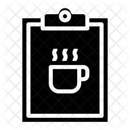

Nestled in the heart of Dublin’s city centre on Henry Streed, Tech Cafe was established in 2000 and quickly became a go-to destination for locals and visitors who loves to mix tech and a good coffee.
Today, its legacy continues with a thematic space which features several coffee options, along with a lovely space for different drinks too.
Great food and a friendly atmosphere make Tech Cafe not only a must-stop if you’re feeling peckish, but a place to relax, play some games, do some researchs, chat, people watch, and the service always comes with a welcoming smile!
|  | Coffee | Large | Medium |
|---|---|---|---|
| Cappuccino | €3,50 | €3,00 | |
| Latte | €3,50 | €3,00 | |
| Americano | €3,50 | €3,00 | |
| Single Espresso | €3,50 | ||
| Double Espresso | €3,50 | ||
You might think pancakes are virtually the same as waffles, but you could not be more mistaken. Unlike waffles, pancakes can be packed and stacked with sweetness.
Delicious with Maple cured bacon and maple syrup.
This consists of fried eggs, feta cheese, tomato, toasted nuts and seeds. Awsome with our Cappuccino!
This special dish contains poached eggs, English muffin, spinach, hollandaise and hot sauce.